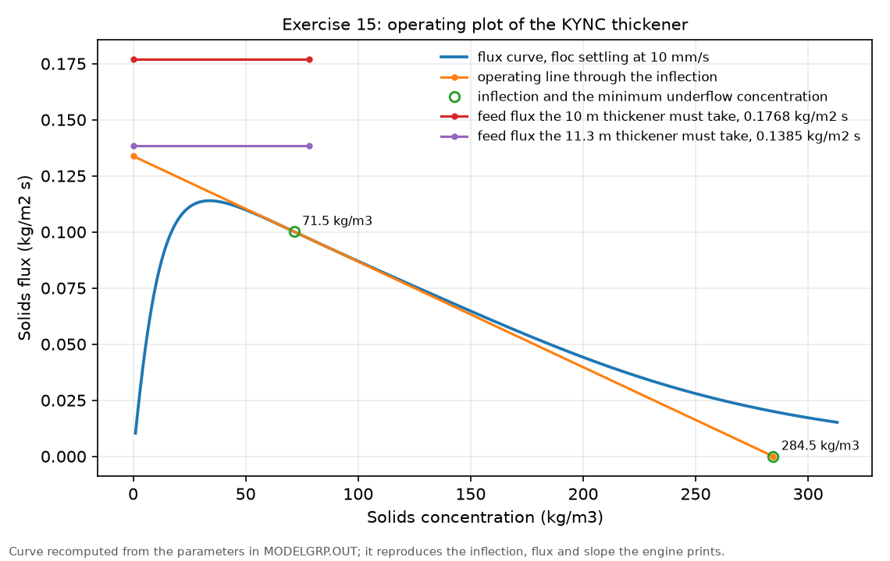
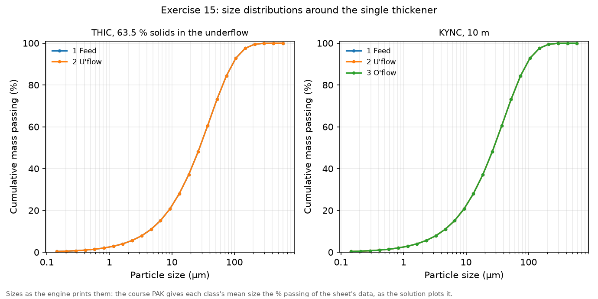

Exercise 15: models for dewatering
module 6 · King 6.1 (thickening), 6.5 (filtration)
Read in King: King 6.1 · Thickening · p. 203King 6.5 · Filtration · p. 217
The exercise sheet and the worked files live on the PC copy of Malla; the sheet's numbers are transcribed in this guide.
On this page
What they ask
The sheet is Ex_15.pdf (Bertil Pålsson, 2005-12-11, two pages). It shows how some of MODSIM's dewatering models work, and keeps to thickeners and filters.
The material (2). A dredge mud, already partly thickened in hydrocyclones: largest particle 500 µm, density 2.4 g/cm³, an RRS distribution with = 40 µm and a spread of 1. The feed is always 50 t/h at 30 % solids by weight.
3.1 A single thickener, with the feed and the two discharges connected to the right places.
- Use the simplest thickener model, with about 42 % solids by volume in the underflow. (a) Is the result reasonable? (b) Try to get a report and the size distributions: any problems, and why?
- Change to a more advanced model at its default values, but with a diameter of 10 m. (a) What does the model now tell about the thickener? (b) Plot the size distributions: are they reasonable? (c) Change the diameter until the slime in the overflow is acceptable: at which diameter does that happen?
3.2 A dewatering circuit: a primary thickener of 8 m and a secondary of 25 m, whose underflows are merged and feed a drum filter. The settling velocity is 10 mm/s in the primary and 1 mm/s in the secondary, and the filter cake holds 15 % moisture.
- Run: how do the thickeners work?
- Change the diameters until the solids in the combined overflow fall below 0.1 % by weight. Are the results reasonable?
- Instead, change the settling velocities under the same limit. Better?
How the work flows
Two parts, each a short series of one-change runs. The single thickener is first run with the simplest model, which only fixes the underflow's density, and then with the Kynch model, which knows the thickener's area and the settling of the flocs; the diameter is then raised, one step per run, until the overflow is clear enough. The circuit is run once as the sheet builds it, and then fixed in two different ways, each a copy of the first run: bigger thickeners, or faster settling.
- Fixed for every run: the mud and its feed of 50 t/h at 30 % solids.
- Chosen once: the Kynch model's settling data (the floc velocity and the Wilhelm-Naide terms that shape the flux curve), and in the circuit the filter's cake.
- Turned: the simple model's underflow density, then the Kynch thickener's diameter; in the circuit, the diameters, or instead the settling velocities.
- Read after each run: the solids and water of every stream, and from the Kynch report the feed flux the duty needs against the most the thickener can take.
- Compared at the end: what each model can tell, and which fix of the circuit is reasonable.
| Run | What you change | What you read | When to stop |
|---|---|---|---|
| THIC | The underflow at 63.5 % solids by weight (42 % by volume) | Underflow and overflow; the report; the size curves | One run |
| KYNC, 10 m | The model, with its defaults and a diameter of 10 m | The report (flux needed and possible), the overflow's solids, the size curves | One run |
| KYNC, larger | The diameter, one step at a time | The overflow's % solids | When the overflow's slime is acceptable (the solution takes under 2 %) |
| Circuit | Primary 8 m at 10 mm/s, secondary 25 m at 1 mm/s, filter cake at 85 % solids | Every stream; both thickeners' reports | One run |
| Diameters, or velocities | The diameters; then, from the first run, the settling velocities instead | The combined overflow's % solids, each thickener's load | When the combined overflow is under 0.1 % solids |
How to check a run
- The feed. 50 t/h of solids with 116.7 m³/h of water (30 % solids).
- The balance. Solids and water in equal solids and water out, stream by stream.
- The Kynch report. It prints the feed flux the duty needs and the most the thickener can take. When the first is larger, the thickener is overloaded and spills solids into its overflow; the ratio of the two is the load.
- The flux curve's inflection. For this mud it is at 71.5 kg/m³; if the report prints 71 514, the settling coefficients did not reach the engine in the form it expects (see the fold of step 3).
Why (the engineering)
What a thickener does. A thickener is a large tank in which the solids settle into a dense bed and leave through the underflow at the bottom, while clear water leaves over the top as the overflow. Its capacity is set by how fast the solids can settle through the tank, which depends on how concentrated they are: a dilute suspension settles fast, a dense one slowly, because the particles hinder each other.
The flux curve and Kynch's theory. The mass of solids that settles through one square metre per second is the flux, the concentration times the settling velocity. It rises with concentration at first, reaches a peak, and falls as the particles crowd each other. Kynch's theory, which King develops in section 6.1, says a thickener of a given area can take at most a certain feed flux, found from that curve at a tangent through the underflow concentration; any more, and the surplus solids have nowhere to go but the overflow. So the area of the thickener, not its depth, sets its capacity for a given pulp. MODSIM's KYNC builds the curve from the settling velocity of free flocs and a few Wilhelm-Naide terms (King, equation 6.19), which describe how the velocity falls as the concentration rises.
Why the simple model cannot answer. THIC only fixes the underflow's density, sends every tonne of solids to the underflow and the rest of the water to the overflow. It is a mass balance, not a thickener: it cannot say whether a tank could do that, or how big it should be.
The filter. The drum filter here is a mass balance too: the cake leaves at the solids content you give, and the rest of the water leaves as filtrate (King, section 6.5).
Before MODSIM: numbers by hand
The simple model. 42 % solids by volume is, by mass,
So the underflow carries the 50 t/h of solids with 50 × 36.5/63.5 = 28.7 m³/h of water, and the overflow the other 116.7 − 28.7 = 87.9 m³/h, with no solids. That is the whole model.
The flux the duty needs. 50 t/h of solids is 13.89 kg/s. A thickener of 10 m has an area of π × 5² = 78.5 m², so it must take
The Kynch report says this mud's thickener can take at most 0.1338 kg/m²s, so it runs at 0.177 / 0.1338 = 1.32 times its capacity.
What an overloaded thickener sends where. It passes to its underflow what it can, the maximum flux times its area: 0.1338 × 78.5 = 10.5 kg/s, which is 37.8 t/h. The other 50 − 37.8 = 12.2 t/h spill over the top. Those are exactly the underflow and overflow of the engine's run. The same rule gives the diameter at which nothing spills:
Where the 0.1338 comes from. KYNC's settling velocity at a concentration (kg/m³) is , with the course's = 0.01 m/s, = 0.01, = 1.5, = and = 5. At the inflection the report prints, = 71.5 kg/m³:
the flux the report gives there. The maximum feed flux, 0.1338, comes from the tangent at that point, and since every velocity scales with , a mud settling ten times slower gives a flux curve ten times lower: 0.0134 for the secondary's 1 mm/s.
The circuit, worked with the same rule.
- Primary, 8 m: 50.3 m² must take 13.89 / 50.3 = 0.276 kg/m²s, 2.07 times its 0.1338. Its underflow is 0.1338 × 50.3 = 6.73 kg/s, 24.2 t/h, and 25.8 t/h spill to the secondary.
- Secondary, 25 m: 490.9 m² must take 7.17 / 490.9 = 0.0146 kg/m²s, 1.09 times its 0.0134. Its underflow is 0.0134 × 490.9 = 6.58 kg/s, 23.7 t/h, and 2.1 t/h spill into the combined overflow.
- The filter's cake at 15 % moisture is 85 % solids: 50 t/h of solids with 50 × 15/85 = 8.8 m³/h of water.
The two fixes, by hand. With the primary at 9 m (63.6 m²) its underflow is 0.1338 × 63.6 = 30.6 t/h, so 19.4 t/h go on to the secondary, which then needs only 0.0110 of its 0.0134: 0.82, no spill. Or, keeping 8 m, a secondary settling at 1.1 mm/s can take 1.1 × 0.0134 = 0.0147, just above the 0.0146 it needs: 0.99, no spill.
Step by step in MODSIM
The ready-made projects: not in the Examples folder yet, and why
The PC copy of Malla has this exercise solved on the MODSIM engine in Simulation of Mineral Processing/Examples/Ex15 Dewatering/: the three single-thickener cases, the three circuit cases, the answers to the sheet's questions and two figures. The projects to open in the GUI are not there yet.
- Why, and why this one is closest. The mud is a single mineral, so its material needs no import. What a first project must show is whether GUI 0.9.12 passes the Wilhelm-Naide coefficients to the engine as typed: the engine divides each by , so the Examples folder ran them multiplied (step 3 says how to check). Malla builds this project first, you run it once, and the job the GUI writes settles it.
- Meanwhile. Thickener.PAK and DewateringCircuit.PAK open in the GUI with everything defined, but read the watch-out of step 3 before trusting their thickener.
A single thickener, with the streams on the right ports
GUI: File > New project; place Mixer-1 and a Thickener; draw Feed > Mixer-1 > thickener, underflow > "U'flow", overflow > "O'flow"The mud: one mineral, RRS 40 µm, 50 t/h at 30 % solids
Material Definition: Components, Size_Conv. and Streams as below; Confirm & Finish; saveHow to fill this window
- Components = one mineral, specific gravity 2.4
- Grades = one class
- Size_Conv. = largest particle size 0.0005 m
- Feed = 50 t/h at 30 % solids, PSD = RRS with d63.2 40 µm and a spread of 1
THIC at 63.5 %, then KYNC at 10 m
Double-click the thickener > THIC (the default) > underflow solids 63.5; Run; open the report and plot the size curves. Then Model: KYNC > diameter 10, the rest at the defaults of the fold; Run; read the reportThickener → THIC, thickener: one field
- Underflow solids (Cu) = 63.5 % (the default is 75), by weight: the sheet's 42 % by volume for a solid of 2.4 g/cm³ (Before MODSIM).
Thickener → KYNC, Kynch thickener: four fields
- Thickener diameter (D) = 10 m (the default is 15); item 2c raises it.
- Terminal floc settling velocity (Vt) = 0.01 m/s, the default, which is the circuit's 10 mm/s; the secondary of the circuit takes 0.001.
- Number of W-N terms = 2, the default.
- W-N α/β pairs [α1,β1…α5,β5] = 0.01 and 1.5, then 5E-11 and 5, the course file's values, which are the terms of with in kg/m³. See the watch-out of step 3 for how to check that they reach the engine.
Raise the diameter until the overflow is acceptable
KYNC diameter 10.5, 11, 11.3 m, one run each; read the overflow's % solids and the report's two fluxesThe circuit: two thickeners and a drum filter
New project: Feed > primary thickener; primary overflow > secondary thickener; both underflows > a mixer > a Filter; secondary overflow and filtrate > the named products; primary KYNC 8 m at 0.01 m/s, secondary KYNC 25 m at 0.001 m/s, filter cake at 85 % solids; RunFilter → FILT, filter: one field
- Solids in filter cake (Cs) = 85 % (the default is 75): the sheet's cake with 15 % moisture. The course file DewateringCircuit.PAK carries 80 %, which leaves the solids the same but changes the water in the cake and the filtrate by up to 42 %.
Fix it by size, or by settling
From the first circuit: the primary's diameter to 9 m, Run, save; then, from the first circuit again, the secondary's settling velocity to 0.0011 m/s, Run, saveExpected results
The engine of GUI 0.9.12 reproduces the suggested solution SolEx_15.pdf in every case, every flow within 1.1 %, once the settling coefficients are in the engine's form and the filter is at 85 %. In every pair the engine's number comes first and the solution's second.
One thickener.
| Case | Underflow t/h | Underflow % solids | Overflow t/h | Overflow % solids |
|---|---|---|---|---|
| THIC, 42 vol % | 50 / 50 | 63.5 / 63.5 | 0 / 0 | 0 / 0 |
| KYNC, 10 m | 37.8 / 37.8 | 69.3 / 69.3 | 12.2 / 12.2 | 10.9 / 10.9 |
| KYNC, 11.3 m | 48.3 / 48.3 | 79.6 / 79.6 | 1.69 / 1.71 | 1.61 / 1.61 |
| KYNC at 10 m, from its report | Engine | Solution |
|---|---|---|
| Inflection of the flux curve, kg/m³ | 71.5 | 71.5 |
| Flux at the inflection, kg/m²s | 0.1001 | 0.1001 |
| Maximum possible feed flux, kg/m²s | 0.1338 | 0.1338 |
| Minimum underflow concentration, kg/m³ | 284.5 | 284.5 |
| Required feed flux, kg/m²s | 0.1768 | 0.1769 |
- THIC (item 1). Reasonable only as a mass balance. Its report only repeats the underflow's % solids, the overflow has no particles and so no size curve, and the underflow's curve is the feed's.
- KYNC (item 2). It tells the area, the settling data, the flux curve with its inflection, the most the thickener can take and what the duty needs, and warns that the feed exceeds the capacity. The underflow at 69.3 % would hardly flow from the spigot, as the solution warns.

The circuit.
| Case | Combined overflow t/h | % solids | Primary load | Secondary load |
|---|---|---|---|---|
| First run: 8 m and 25 m | 2.16 / 2.16 | 1.95 / 1.96 | 2.07 | 1.09 |
| Primary at 9 m | 0 / 0 | 0 / 0 | 1.63 | 0.82 |
| Secondary at 1.1 mm/s | 0 / 0 | 0 / 0 | 2.07 | 0.99 |
The load is the feed flux the thickener must take divided by the most it can take, both printed in its report: above 1 it spills. Both fixes clear the effluent. Neither is quite a comfortable design, since the primary still runs overloaded in both and the faster secondary sends most of the water through the filter.

Common mistakes
- Typing 42 into THIC. The field is % solids by weight; 42 % by volume is 63.5 % by weight for this mud.
- Leaving KYNC at 15 m. The window's default diameter; the sheet asks for 10 m.
- The settling velocity in mm/s. The field is in m/s: 10 mm/s is 0.01 and 1 mm/s is 0.001.
- Not checking the flux curve's inflection. If it prints 71 514 instead of 71.5, the coefficients did not reach the engine in its form, and every tonne goes to the underflow at 100 %.
- Leaving the filter at 75 % or at the course file's 80 %. The sheet's cake at 15 % moisture is 85 % solids.
- Taking the overflow's size curve as real. The model gives it the feed's distribution; a real overflow is finer.
- Judging each thickener's overflow instead of the combined one. The 0.1 % limit is on the combined overflow.
Sensitivity analysis
- Diameter. The capacity grows with the area, so the square of the diameter: from 10 to 11.5 m the area grows by 32 %, exactly the overload of the 10 m thickener.
- Settling velocity. The whole flux curve scales with it: 10 % faster flocs give the secondary 10 % more capacity, which is just enough.
- What each fix costs. A bigger primary keeps the water balance; a faster secondary sends 92 m³/h through the filter instead of 24 m³/h.
Hand-in checklist
Nothing of this exercise is graded, but the sheet asks to show: